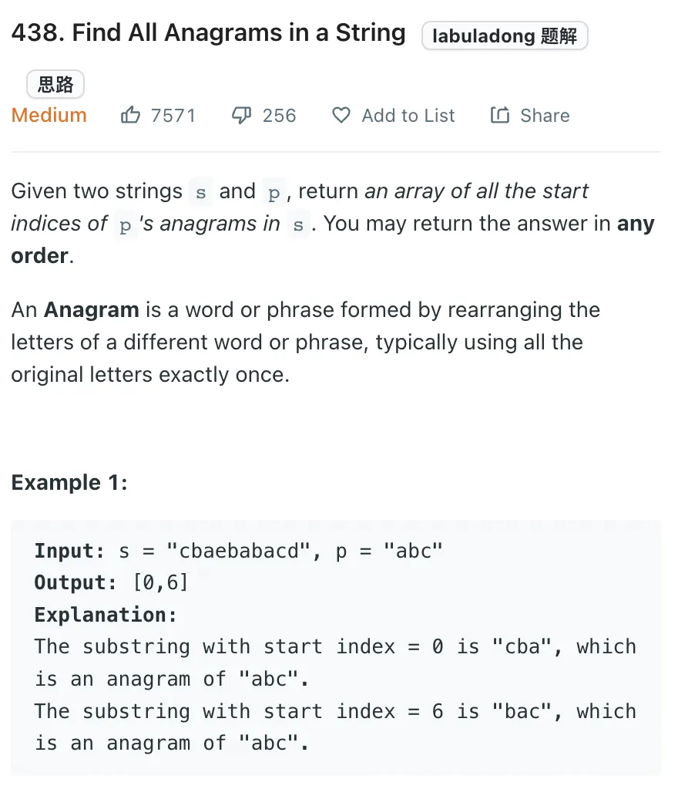
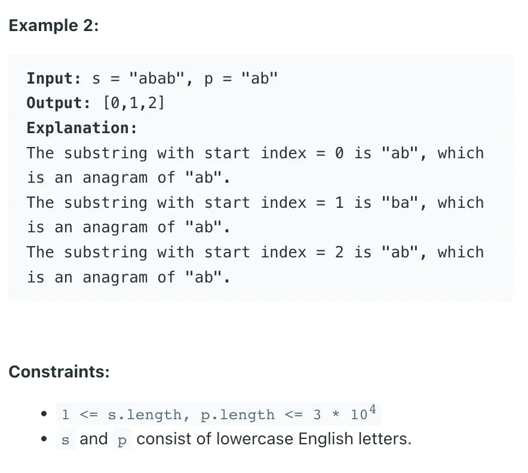

438. Find All Anagrams in a String
考過的公司：Asked by: Amazon, Google
Question


✍🏽 My Solution
int sLen = s.length();
int pLen = p.length();
Set<Character> targetSet = new HashSet<>();
int left = 0, right = 0;
List<Integer> result = new ArrayList<>();
int cur = 0;
for (int i = 0; i < p.length(); i++) {
targetSet.add(p.charAt(i));
}
while (right < sLen) {
char c = p.charAt(right);
// 如果 set 不包含字符，left指針++
if (!targetSet.contains(c)) {
left++;
}
// 如果 set 包含字符，left指針++
targetSet.remove(c);
// 如果 targetSet為空，代表有一組相符的Anagrams，加入結果數組
if (targetSet.isEmpty()) {
result.add(left++);
for (int i = 0; i < p.length(); i++) {
targetSet.add(p.charAt(i));
}
}
right++;
}
Solution #1 [labuladong滑動窗口模板]
Runtime: 33 ms, faster than 39.86% of Java online submissions for Find All Anagrams in a String.
Memory Usage: 49.1 MB, less than 24.78% of Java online submissions for Find All Anagrams in a String.
class Solution {
public List<Integer> findAnagrams(String s, String p) {
Map<Character, Integer> window = new HashMap<>(); // 窗口中的字符
Map<Character, Integer> needs = new HashMap<>(); // 需要湊齊的字符
for (char c : p.toCharArray()) {
needs.put(c, needs.getOrDefault(c, 0) + 1);
}
int left = 0, right = 0;
int valid = 0; // 滿足 needs 條件的字符個數，如果valid和needs大小相同，則說明窗口以滿足條件，完全覆蓋了字符p
List<Integer> result = new ArrayList<>();
while (right < s.length()) {
char c = s.charAt(right);
right++;
if (needs.containsKey(c)) {
window.put(c, window.getOrDefault(c, 0) + 1);
if (window.get(c).equals(needs.get(c))) {
valid++;
}
}
while (right - left >= p.length()) {
if (valid == needs.size()) {
result.add(left);
}
char d = s.charAt(left);
left++;
if (needs.containsKey(d)) {
if (window.get(d).equals(needs.get(d))) {
valid--;
}
window.put(d, window.get(d) - 1);
}
}
}
return result;
}
}